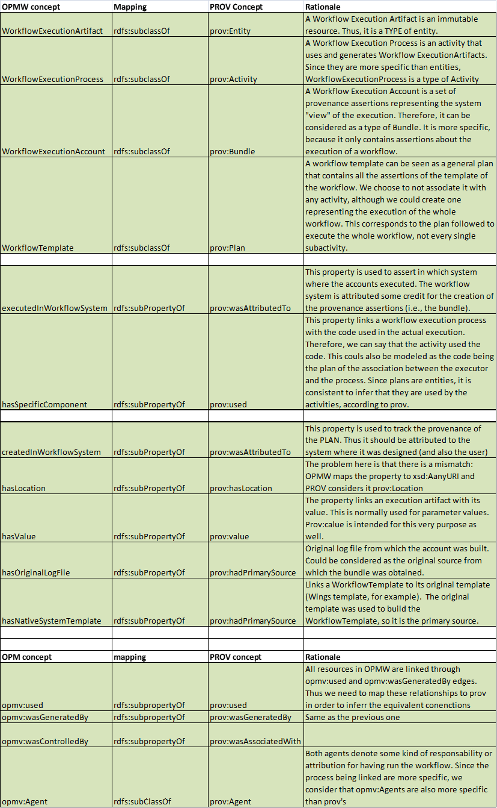

The W3C Provenance Working Group has been developing a new provenance standard during the last year and a half. This standard has been discussed from a set of concepts proposed at the end of the Provenance Incubator Group. The group has recently released (July 2012) a family of documents that explain how to represent (PROV Data Model (PROV-DM), PROV Ontology (PROV-O), PROV-PRIMER) and consume (PROV-AQ) provenance on the Web, and they are currently calling for implementations.
The main focus of OPMW is to make the provenance of scientific workflows available as Linked Data. For this reason, we aim to align the vocabulary to PROV and produce the RDF in a fully compatible way. In this page we illustrate how both vocabularies are related to each other, and how can anyone retrieve PROV statements from our endpoint of published workflows.
For our alignment we will rely on the PROV-O ontology, which encodes PROV-DM in OWL.
The next table summarizes the concepts, properties and data properties that we can map to PROV. Those concepts or properties missing in the table have no equivalent in PROV-O.

As it can be seen in the table, we have mapped four concepts of OPMV to PROV. This decision was taken for several reasons:
1.- The relations connect Artifacts and processes in OPMW. In order to produce PROV provenance, we need to map these properties.
2.- OPM was one of the main references to PROV. The properties opmv:used, opmv:wasGeneratedBy and opmv:wasControlledBy were the ones that originated prov:used, prov:wasGeneratedBy and prov:WasAssociatedWith. Since OPMV's entities are more restrictive than PROV's, it is natural to map these properties as subproperties of PROV.
When we publish a workflow, we produce additional triples to translate the provenance-related statements to PROV. For example, for each opmw:WorkflowExecutionArtifact, we add the type prov:Entity (since opmw:WorkflowExecutionArtifact is a subclass of prov:Entity, each resource of type opmw:WorkflowExecutionArtifact is also a prov:Entity).
This design decission implies to assert a few triples more per workflow, but allows to query the endpoint directly with PROV without any need of an intermediate transformation or construct query.
As an example, we will provide the PROV query for the example three in the Examples section (the query wants to know how the entity with location http://www.opmw.org/datasets/resource/2/221/2f681a26f9ccae58e04164a27a2f... was generated). Some additional relationships are added because they are plan-specific, and out of the scope of PROV.
prefix prov: <http://www.w3.org/ns/prov#>
prefix opmw: <http://www.opmw.org/ontology/>
select distinct ?process ?absProcess ?template where
{
?entity prov:atLocation "http://www.opmw.org/datasets/resource/2/221/2f681a26f9ccae58e04164a27a2f29b3"^^xsd:anyURI.
?entity prov:wasGeneratedBy ?process.
?process opmw:correspondsToTemplateProcess ?absProcess.
?absProcess opmw:isStepOfTemplate ?template.
}